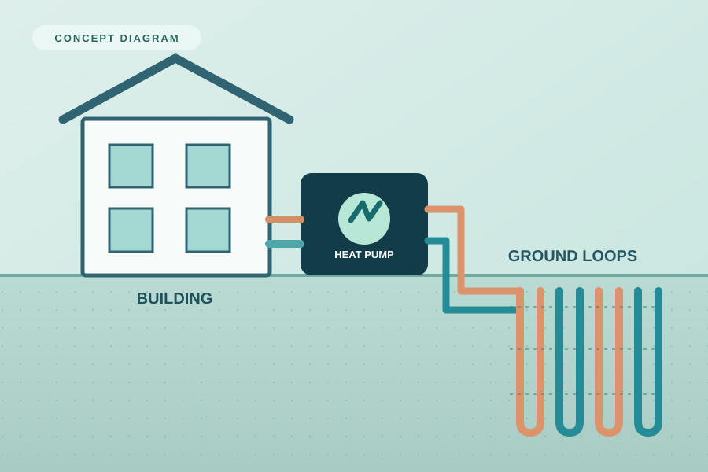
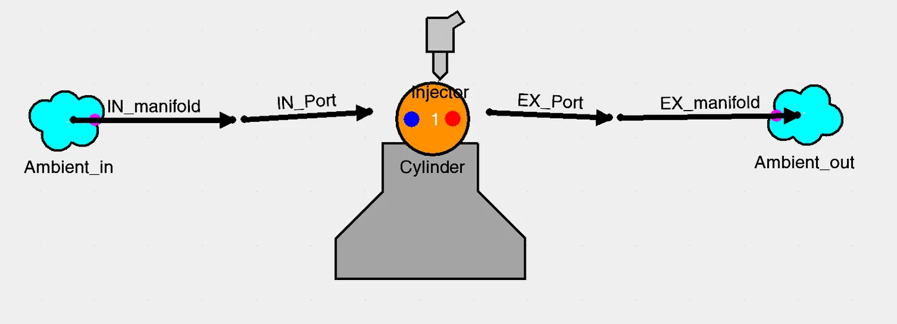
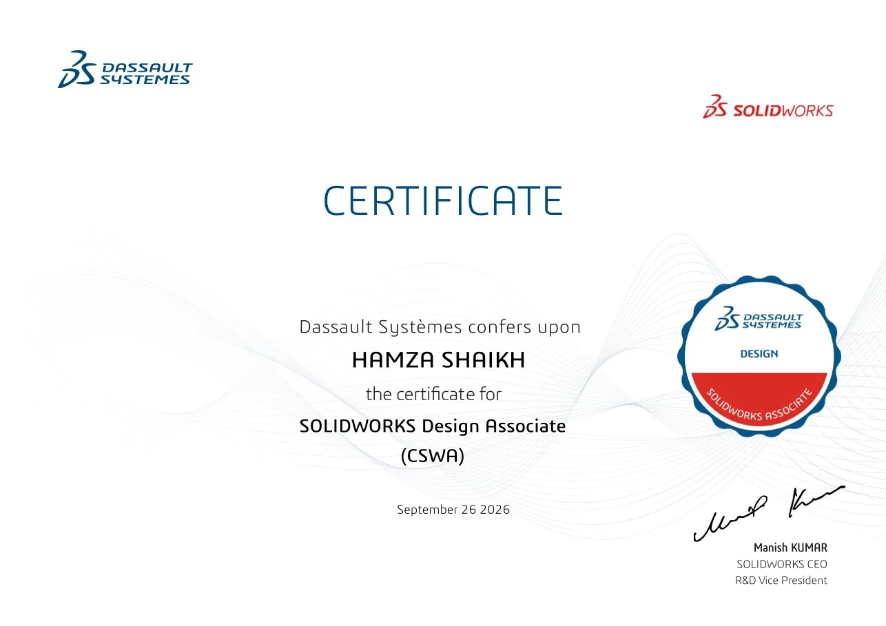
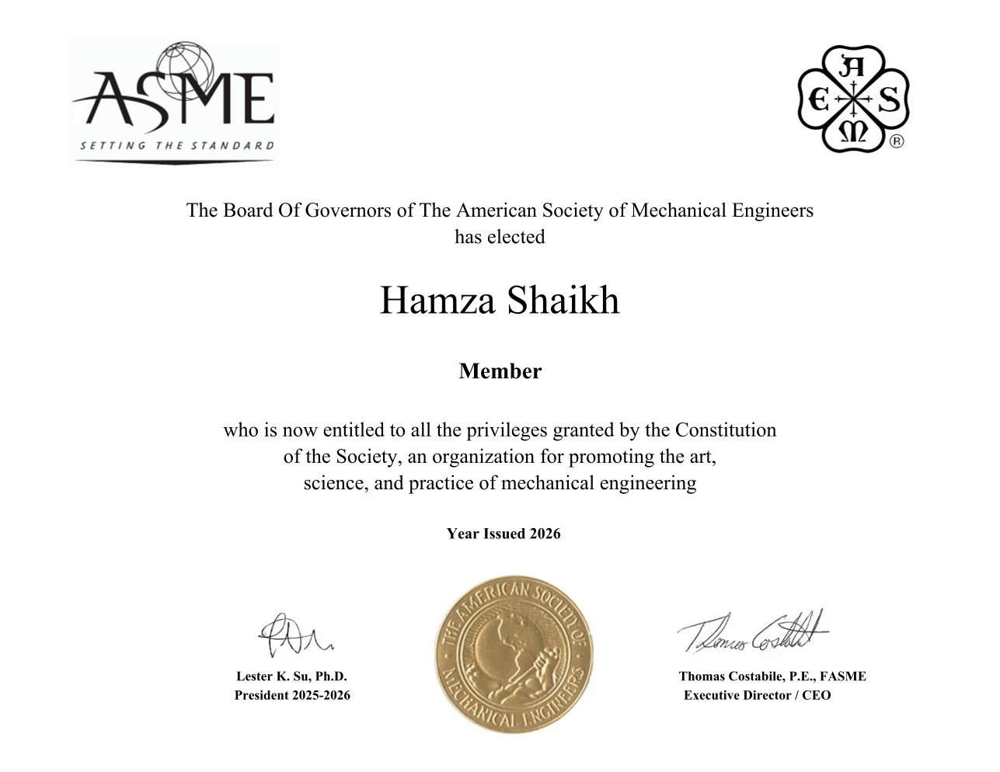
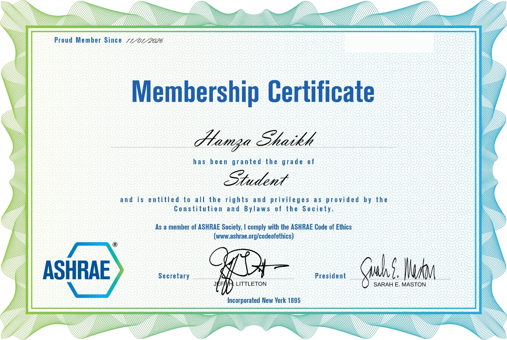
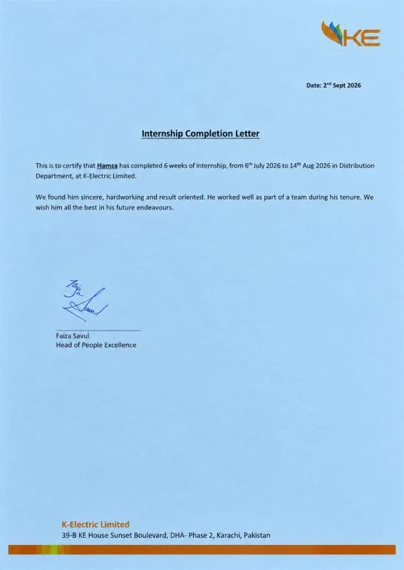
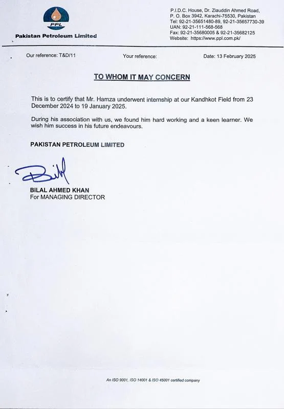
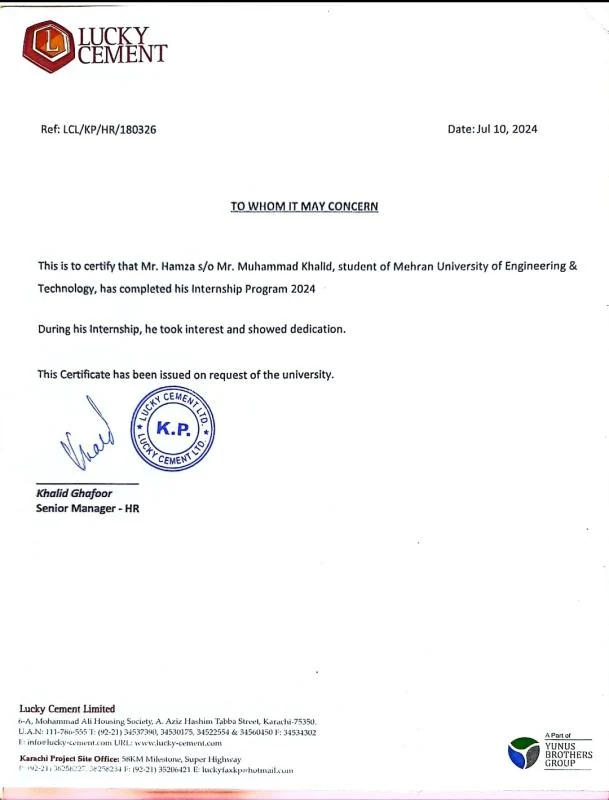

Thermal systemsAcademic research
Ground Source Heat Pump Performance Analysis
Energy modelling for a mixed-use building and ground heat exchanger sizing across contrasting climates using HAP and GLHEPro.
View case studyI'm Hamza, a Mechanical Engineering graduate from Mehran University of Engineering & Technology, with interests in thermal systems, engineering simulation, and practical industrial problem-solving.
A closer look at how I approach modelling, design verification, and engineering problems encountered in industry.

Energy modelling for a mixed-use building and ground heat exchanger sizing across contrasting climates using HAP and GLHEPro.
View case study
Code-based calculations, PV Elite assessment, and finite element modelling to explore pressure vessel design and stress response.
View case study
Benchmarking drying methods, interpreting pressure-rise observations, and proposing improvements in process monitoring and vacuum integrity.
View case studyIllustrations are conceptual and are not presented as screenshots of original models. Original analysis screenshots and authorized evidence will be added to each case study.
Selected coursework with original simulation figures, engineering analysis, and clearly stated study limitations.

ENGINE PERFORMANCE · RICARDO WAVE1D simulation comparing 21:1 and 19:1 compression ratios at 2000 rpm, with a focus on cylinder pressure, brake output, and thermal efficiency.
 FLUID FLOW · ANSYS CFD
FLUID FLOW · ANSYS CFD
Simulated hot and cold water merging in a Y-shaped channel, using original 3D geometry, temperature contours, velocity contours, and vector plots.
These are semester-level simulation assignments. Figures come from the original submitted coursework; results describe the models and are not claimed as experimental validation.
My mechanical design certification and memberships in professional engineering societies. Click each document to view a larger version.

Issued by Dassault Systèmes on 26 September 2026. This certification supports my skills in parametric modelling and mechanical CAD. Selected original part drawings will be added separately.
View certificateMembership credentials are distinct from professional licenses or technical certifications.

Member · Certificate issued in 2026
View membership certificate ↗
For privacy, the published SOLIDWORKS credential QR / identifier and ASHRAE member number are not displayed. Original documents are retained offline.
My engineering interests connect energy systems, mechanical equipment, and numerical analysis. During my degree, I worked on building-load modelling and geothermal heat exchanger sizing, while industry placements introduced me to real operating environments and the importance of reliable engineering decisions.
I enjoy understanding how systems work, testing assumptions with calculations or simulations, and communicating findings clearly. I am interested in opportunities where I can continue developing as an engineer and researcher.
Let's connectFour placements spanning power, oil and gas, and cement manufacturing. Internship letters are shown where available.
Karachi, Pakistan
Assessed transformer vacuum-drying operations and prepared technical recommendations related to sealing, monitoring, and drying verification.

Internship completion letter6 July – 14 August 2026View document ↗Sanghar, Pakistan
Studied gas compression, separation, pumping, utility systems, and mechanical maintenance during field operations.
Kashmore, Pakistan
Explored natural gas processing, compression, dehydration, and the maintenance of static and rotating equipment.

Internship certificate23 Dec 2024 – 19 Jan 2025View document ↗Nooriabad, Pakistan
Completed a technical study of cement manufacturing and plant power generation, including waste-heat recovery systems.

Internship certificateInternship Program 2024View document ↗Tools listed in my CV, together with additional methods described in my selected work. Examples are linked to the relevant project pages.
Open to engineering opportunities and relevant graduate study conversations.